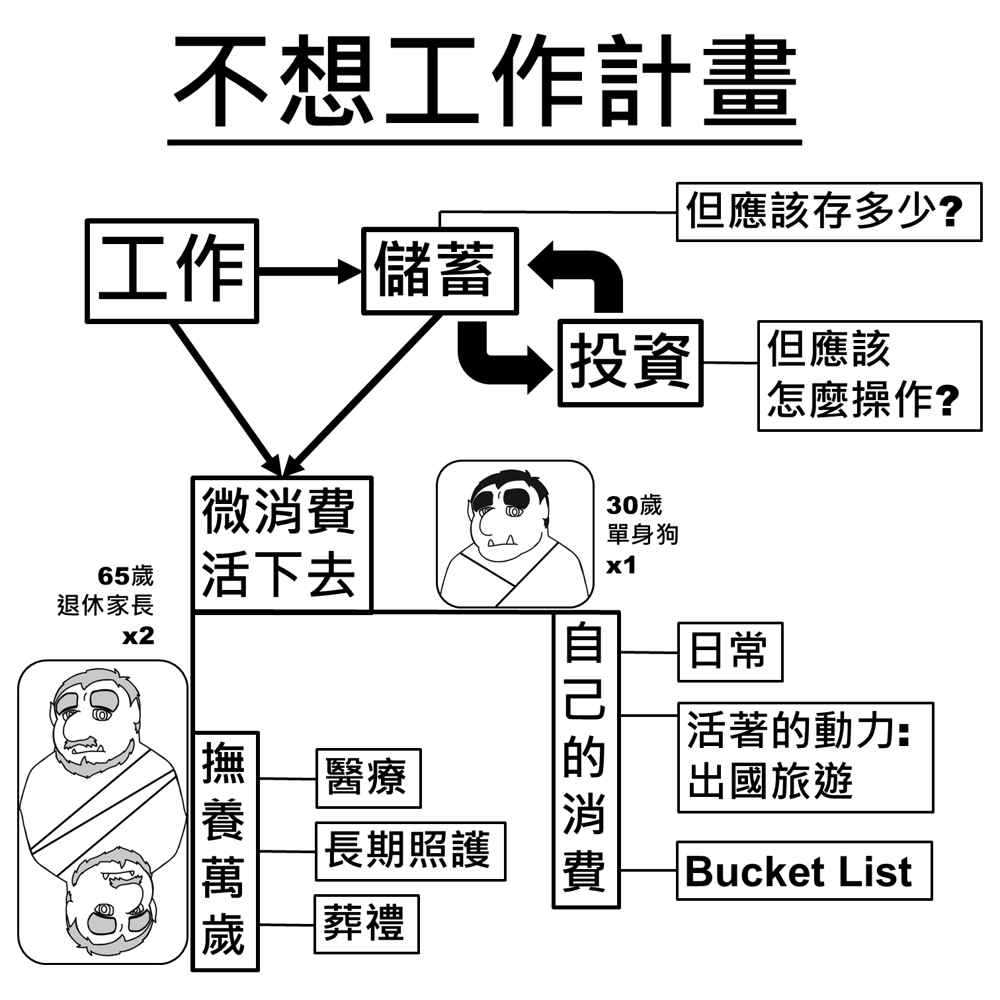

單身男子的退休攻略
醫療、長照與存在的意義
高齡相關的疾病與醫療，以及長照需求，還有退休後存在的意義，是青壯年還在打拚的階段不會想到， 但是自己或家長遲早會面對的議題。這個網站想幫大家整合資訊，把可能遇到的問題、有哪些解決方式、 各種解決方式要準備多少錢，先讓大家知道。先做好準備，退休後就不會迷惘。
醫療
年紀漸長之後最直接面對的課題：認識常見疾病、做好健康檢查、了解自費醫療的選擇與費用，並在急症發生前先有準備。
長照
長期照護等級怎麼判定、有哪些機構與輔助服務可以選、政府補助與自費費用大概是多少，一次整理給你。
存在的意義
解決了醫療與長照的現實問題之後，退休後的日子要怎麼過、想成為怎樣的人、想被怎麼記住——這些也值得先想清楚。
這個網站的起點
這一切的起點是一張手畫的「不想工作計畫」思考圖：工作賺錢、儲蓄投資，最終是為了兩件事—— 撫養萬歲（照顧年邁的家長：醫療、長期照護、身後事），以及 自己的消費（日常生活、活著的動力、人生清單）。
身為單身男子，這些議題沒有另一半可以分攤，更需要提早想清楚：會遇到什麼問題、有哪些解決方式、 每種方式大概要準備多少錢。這個網站就是把持續整理的資料，用比較容易查閱的方式留下來。

最初的手繪思考圖：「不想工作計畫」